Recursos · generada el 19/10/2026
Galería de assets
Todas las ilustraciones e imágenes de la app en un solo lugar, con su ruta, sus medidas, su peso y dónde se usan. Tocá una miniatura para abrir el archivo original. Las reglas de uso están en 05 Ilustraciones e imágenes .
146 MB
de imágenes en public/ · 50 de más de 1 MB
Cómo se actualiza Desde la raíz de
rituales-app:
python3 docs/design-system/tools/build-galeria.py. Exporta las ilustraciones, rehace las miniaturas y vuelve a buscar dónde se usa cada archivo. Para ver los arcanos animados, con la app corriendo:
localhost:5173/dev/arcanos .
Arcanos
Los 22 arcanos mayores y el dorso, exportados del componente ArcanaArt (src/app/components/arcana/ArcanaArt.tsx). En la app los trazos se dibujan al revelar y las estrellas titilan; acá se ven quietos.
Ilustraciones de interfaz
Ilustraciones de línea en tinta que acompañan bloques de la app.
Cuenco y estrella WishIllustration · DailyIntention.tsx Encabeza la Intención del día
Fases lunares
Íconos de línea del componente MoonPhaseIcon, en sus dos temas. Conviven con las lunas en PNG (más abajo): ver la decisión en la spec 05.
Luna nueva MoonPhaseIcon
Luna nueva darkTheme
Creciente MoonPhaseIcon
Creciente darkTheme
Cuarto creciente MoonPhaseIcon
Cuarto creciente darkTheme
Gibosa creciente MoonPhaseIcon
Gibosa creciente darkTheme
Luna llena MoonPhaseIcon
Luna llena darkTheme
Gibosa menguante MoonPhaseIcon
Gibosa menguante darkTheme
Cuarto menguante MoonPhaseIcon
Cuarto menguante darkTheme
Menguante MoonPhaseIcon
Menguante darkTheme
Fondos de Home
Fondo a pantalla completa del hero de Home. Se elige uno al azar en cada visita. 6 archivos · 13.6 MB.
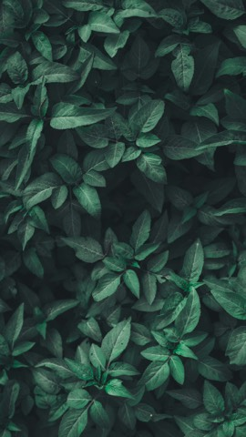
bg-1.jpg
/home/bg-1.jpg
2565×4560 · 1.8 MB pesada
En uso Home.tsx (al azar: bg-${n}.jpg)
bg-2.jpg
/home/bg-2.jpg
3630×5445 · 1.7 MB pesada
En uso Home.tsx (al azar: bg-${n}.jpg)
bg-3.jpg
/home/bg-3.jpg
2867×4300 · 1.6 MB pesada
En uso Home.tsx (al azar: bg-${n}.jpg)
bg-4.jpg
/home/bg-4.jpg
4024×6048 · 708 KB
En uso Home.tsx (al azar: bg-${n}.jpg)
bg-5.jpg
/home/bg-5.jpg
3456×5184 · 3.3 MB pesada
En uso Home.tsx (al azar: bg-${n}.jpg)
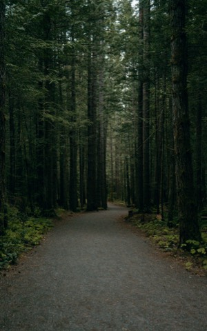
bg-6.jpg
/home/bg-6.jpg
3713×5940 · 4.5 MB pesada
En uso Home.tsx (al azar: bg-${n}.jpg)
Rituales e historias
Portadas de los rituales curados, de la grilla y de Stories. 45 archivos · 111.7 MB · 7 sin uso.
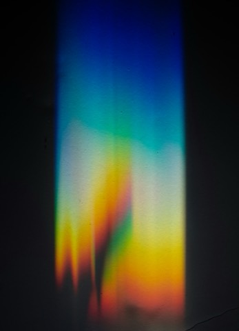
story-abastract-1.jpg
/images/story-abastract-1.jpg
3337×4611 · 1.5 MB pesada
En uso RitualDetail.tsx, RitualGridCard.tsx, Stories.tsx
story-abastract-2.jpg
/images/story-abastract-2.jpg
3632×5456 · 961 KB
En uso RitualDetail.tsx, RitualGridCard.tsx, Stories.tsx
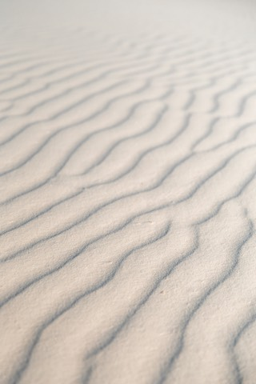
story-abastract-3.jpg
/images/story-abastract-3.jpg
4000×6000 · 3.3 MB pesada
En uso RitualDetail.tsx, RitualGridCard.tsx, Stories.tsx
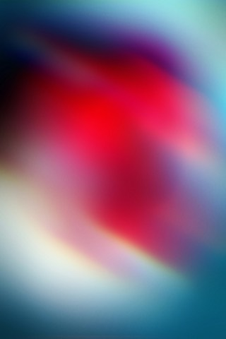
story-abastract-4.jpg
/images/story-abastract-4.jpg
2000×3000 · 888 KB
En uso RitualDetail.tsx, RitualGridCard.tsx, Stories.tsx
story-abastract-5.jpg
/images/story-abastract-5.jpg
3456×5184 · 3.3 MB pesada
En uso RitualDetail.tsx, RitualGridCard.tsx
story-air-1.jpg
/images/story-air-1.jpg
3008×3760 · 1.7 MB pesada
En uso RitualDetail.tsx, RitualGridCard.tsx, Stories.tsx
story-air-2.jpg
/images/story-air-2.jpg
2592×3888 · 682 KB
En uso RitualDetail.tsx, RitualGridCard.tsx
story-air-3.jpg
/images/story-air-3.jpg
8165×12247 · 6.1 MB pesada
En uso RitualDetail.tsx, RitualGridCard.tsx, Stories.tsx
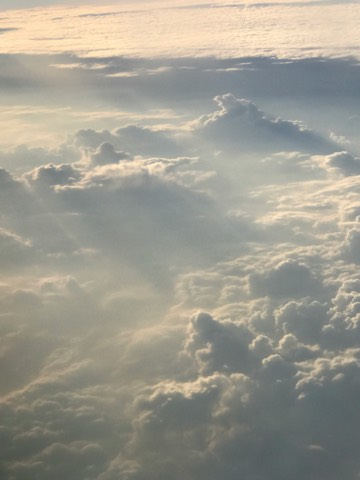
story-air-4.jpg
/images/story-air-4.jpg
3024×4032 · 972 KB
En uso RitualDetail.tsx, RitualGridCard.tsx
story-air-5.jpg
/images/story-air-5.jpg
4000×6000 · 1.4 MB pesada
En uso RitualDetail.tsx, RitualGridCard.tsx, Stories.tsx
story-beach-1.jpg
/images/story-beach-1.jpg
2902×5165 · 2.6 MB pesada
En uso RitualDetail.tsx, RitualGridCard.tsx, Stories.tsx
story-fire-1.jpg
/images/story-fire-1.jpg
3648×5472 · 3.5 MB pesada
En uso RitualDetail.tsx, RitualGridCard.tsx, Stories.tsx, curated-rituals.ts
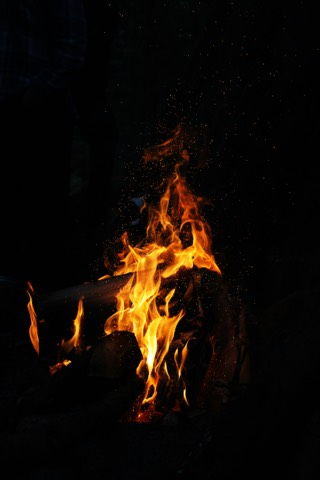
story-fire-2.jpg
/images/story-fire-2.jpg
3456×5184 · 1.6 MB pesada
En uso RitualDetail.tsx, RitualGridCard.tsx
story-fire-3.jpg
/images/story-fire-3.jpg
3880×5173 · 2.3 MB pesada
En uso RitualDetail.tsx, RitualGridCard.tsx, Stories.tsx, curated-rituals.ts
story-fire-4.jpg
/images/story-fire-4.jpg
3648×5472 · 5.4 MB pesada
En uso RitualDetail.tsx, RitualGridCard.tsx
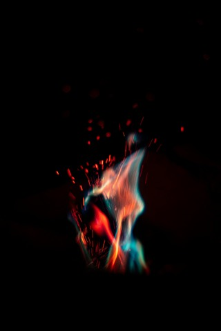
story-fire-5.jpg
/images/story-fire-5.jpg
5792×8688 · 1.5 MB pesada
En uso RitualDetail.tsx, RitualGridCard.tsx, Stories.tsx
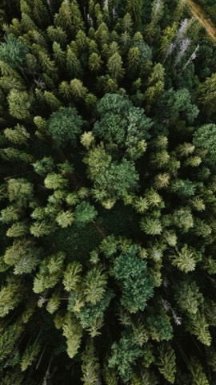
story-forest-1.jpg
/images/story-forest-1.jpg
2250×4000 · 3.6 MB pesada
En uso RitualDetail.tsx, RitualGridCard.tsx
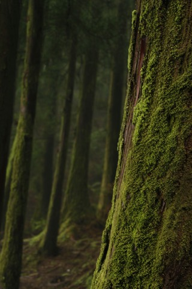
story-forest-2.jpg
/images/story-forest-2.jpg
3456×5184 · 2.2 MB pesada
En uso RitualDetail.tsx, RitualGridCard.tsx, Stories.tsx
story-forest-3.jpg
/images/story-forest-3.jpg
3840×5760 · 3.3 MB pesada
En uso RitualDetail.tsx, RitualGridCard.tsx
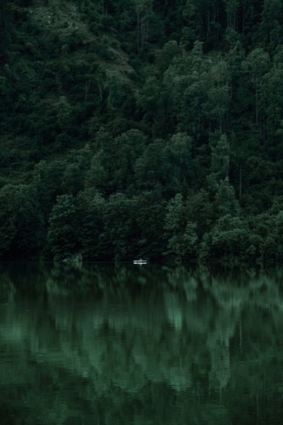
story-forest-4.jpg
/images/story-forest-4.jpg
5304×7952 · 4.9 MB pesada
En uso RitualDetail.tsx, RitualGridCard.tsx
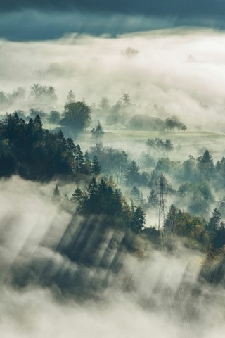
story-forest-5.jpg
/images/story-forest-5.jpg
3000×4500 · 2.3 MB pesada
En uso RitualDetail.tsx, RitualGridCard.tsx
story-grass-1.jpg
/images/story-grass-1.jpg
3840×5760 · 6.1 MB pesada
En uso RitualDetail.tsx, RitualGridCard.tsx
story-grass-2.jpg
/images/story-grass-2.jpg
4000×6000 · 1.4 MB pesada
En uso RitualDetail.tsx, RitualGridCard.tsx
story-grass-3.jpg
/images/story-grass-3.jpg
3456×3631 · 1.3 MB pesada
En uso Stories.tsx, curated-rituals.ts
story-grass-4.jpg
/images/story-grass-4.jpg
4000×6000 · 2.0 MB pesada
Sin uso
story-grass-5.jpg
/images/story-grass-5.jpg
2731×4096 · 1.9 MB pesada
Sin uso
story-grass-6.jpg
/images/story-grass-6.jpg
4672×7008 · 1.4 MB pesada
Sin uso
story-grass-7.jpg
/images/story-grass-7.jpg
2592×3888 · 2.5 MB pesada
Sin uso
story-grass-8.jpg
/images/story-grass-8.jpg
2449×3674 · 1.5 MB pesada
Sin uso
story-lluvia-1.jpg
/images/story-lluvia-1.jpg
3200×4800 · 2.3 MB pesada
En uso RitualDetail.tsx, RitualGridCard.tsx
story-lluvia-2.jpg
/images/story-lluvia-2.jpg
2592×4608 · 1.4 MB pesada
En uso RitualDetail.tsx, RitualGridCard.tsx
story-lluvia-3.jpg
/images/story-lluvia-3.jpg
2667×4000 · 484 KB
En uso RitualDetail.tsx, RitualGridCard.tsx, Stories.tsx
story-lluvia-4.jpg
/images/story-lluvia-4.jpg
3744×5616 · 2.8 MB pesada
En uso RitualDetail.tsx, RitualGridCard.tsx
story-lluvia-5.jpg
/images/story-lluvia-5.jpg
4000×5584 · 5.7 MB pesada
En uso RitualDetail.tsx, RitualGridCard.tsx, Stories.tsx
story-mountain-1.jpg
/images/story-mountain-1.jpg
3171×4750 · 1.0 MB pesada
En uso RitualDetail.tsx, RitualGridCard.tsx
story-mountain-2.jpg
/images/story-mountain-2.jpg
3264×4896 · 2.5 MB pesada
En uso RitualDetail.tsx, RitualGridCard.tsx, Stories.tsx, curated-rituals.ts
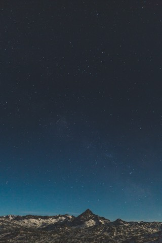
story-mountain-4.jpg
/images/story-mountain-4.jpg
3840×5760 · 4.7 MB pesada
Sin uso
story-mountain-5.jpg
/images/story-mountain-5.jpg
3376×6000 · 2.7 MB pesada
Sin uso
story-noche.jpg
/images/story-noche.jpg
3871×5800 · 1.7 MB pesada
En uso Stories.tsx
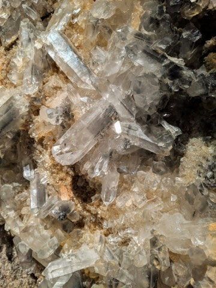
story-stones-1.jpg
/images/story-stones-1.jpg
3024×4032 · 2.3 MB pesada
En uso RitualDetail.tsx, RitualGridCard.tsx, wiki.ts
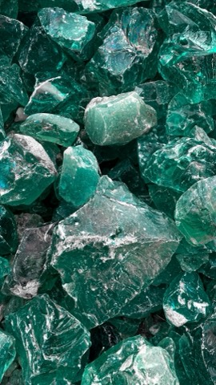
story-stones-2.jpg
/images/story-stones-2.jpg
2268×4032 · 2.9 MB pesada
En uso RitualDetail.tsx, RitualGridCard.tsx
story-stones-3.jpg
/images/story-stones-3.jpg
3648×5472 · 3.2 MB pesada
En uso RitualDetail.tsx, RitualGridCard.tsx
story-water-1.jpg
/images/story-water-1.jpg
2112×3168 · 2.2 MB pesada
En uso RitualDetail.tsx, RitualGridCard.tsx, Stories.tsx, curated-rituals.ts
story-water-2.jpg
/images/story-water-2.jpg
1600×2399 · 575 KB
En uso RitualDetail.tsx, RitualGridCard.tsx, Stories.tsx, curated-rituals.ts
story-water-3.jpg
/images/story-water-3.jpg
4000×6000 · 3.5 MB pesada
En uso RitualDetail.tsx, RitualGridCard.tsx, Stories.tsx
Wiki
Imágenes de las notas de la Wiki (Unsplash; el autor está en el nombre del archivo). 7 archivos · 19.8 MB · 1 sin uso.
gustavo-zambelli-sK9W1j9oR3I-unsplash.jpg
/wiki/gustavo-zambelli-sK9W1j9oR3I-unsplash.jpg
6240×4160 · 5.3 MB pesada
En uso wiki.ts
heidi-fin-lMSpfteI34I-unsplash.jpg
/wiki/heidi-fin-lMSpfteI34I-unsplash.jpg
3299×4269 · 2.6 MB pesada
Sin uso
nicole-queiroz-hfGFOLrztbM-unsplash.jpg
/wiki/nicole-queiroz-hfGFOLrztbM-unsplash.jpg
2041×3060 · 1.6 MB pesada
En uso wiki.ts
ray-albrow-vCc-F97wkHk-unsplash.jpg
/wiki/ray-albrow-vCc-F97wkHk-unsplash.jpg
3648×5472 · 1.6 MB pesada
En uso wiki.ts
shane-rounce-DNkoNXQti3c-unsplash.jpg
/wiki/shane-rounce-DNkoNXQti3c-unsplash.jpg
3264×4928 · 2.8 MB pesada
En uso wiki.ts
siim-lukka-K6rjbT5P6wE-unsplash.jpg
/wiki/siim-lukka-K6rjbT5P6wE-unsplash.jpg
3748×5546 · 4.9 MB pesada
En uso wiki.ts
sixteen-miles-out-oDfeFV-Y2v0-unsplash.jpg
/wiki/sixteen-miles-out-oDfeFV-Y2v0-unsplash.jpg
4343×5429 · 1019 KB
En uso wiki.ts
Lunas en PNG
Renders de la luna que usa el calendario cósmico. 8 archivos · 1004 KB · 5 sin uso.
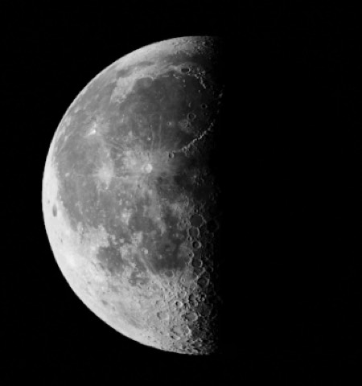
creciente.png
/creciente.png
362×386 · 95 KB
Sin uso
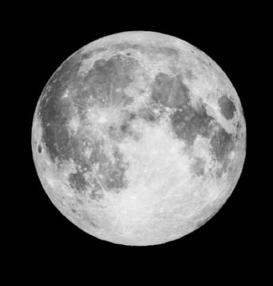
llena.png
/llena.png
404×424 · 144 KB
Sin uso
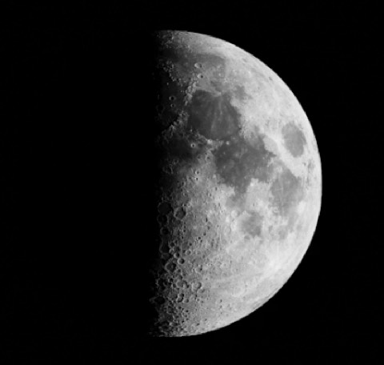
menguante.png
/menguante.png
400×380 · 101 KB
Sin uso
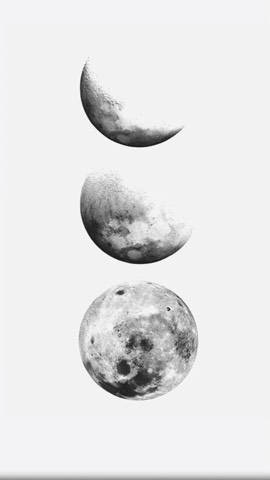
moon-bg.png
/moon-bg.png
576×1024 · 186 KB
Sin uso
moon-full.png
/moon-full.png
404×424 · 160 KB
En uso cosmic-calendar.ts
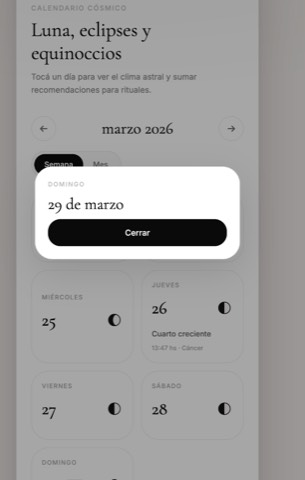
moon-phases.png
/moon-phases.png
652×1024 · 104 KB
Sin uso
moon-waning.png
/moon-waning.png
400×380 · 111 KB
En uso cosmic-calendar.ts
moon-waxing.png
/moon-waxing.png
362×386 · 103 KB
En uso cosmic-calendar.ts